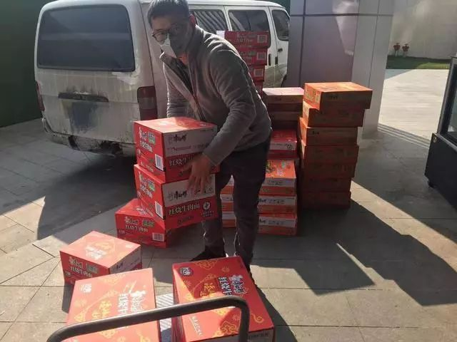
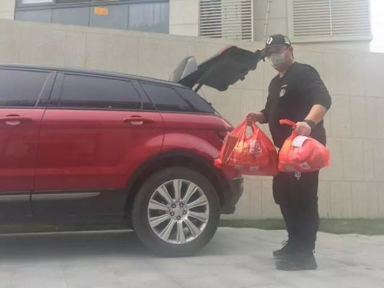
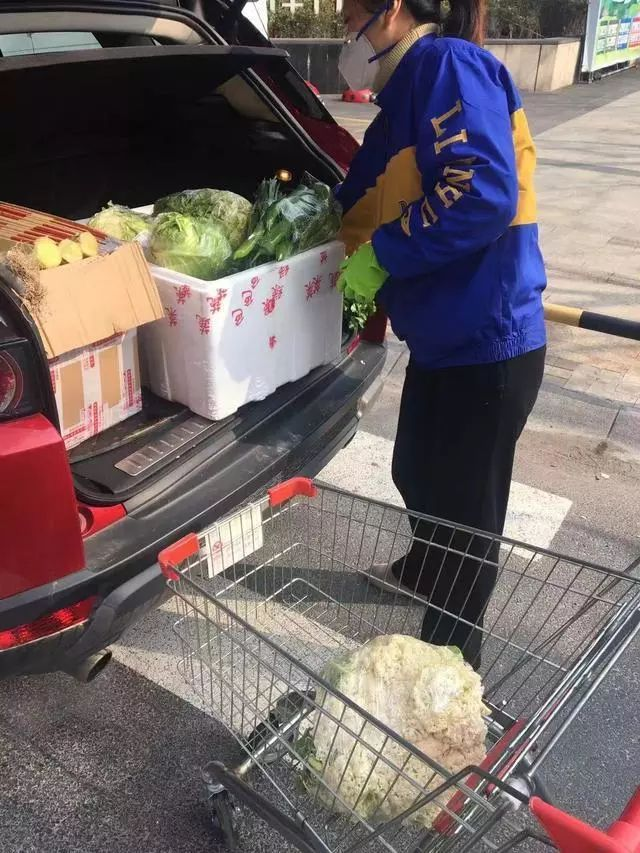
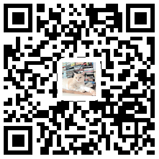
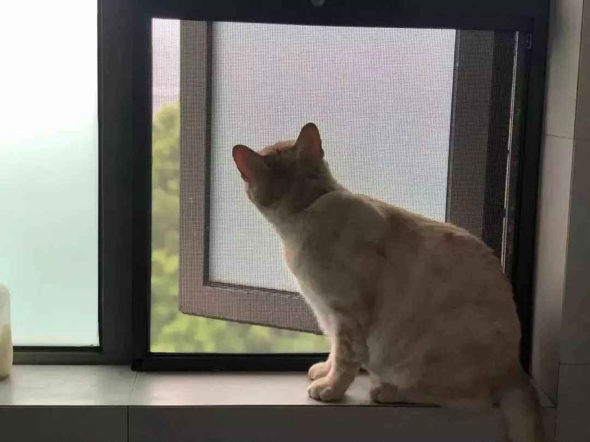

城中十日：一个武汉隔离者的自述
原文链接 备份链接 小安，90后，从事法律行业，是一名在武汉的安徽人，截至2月1日，她已经独自一人在武汉自我隔离了10天，这10天里，她用文字和图片记录下了她的所听、所见、所感，她的怕和爱，她的惧和勇，她的沮丧和希望。 疫情之下，人类的悲 …

这个春节是我开超市来最忙的春节
口述/占先生
现在，我每天也要送货了，开着我的路虎车。
我昨天送货一直送到晚上9点多，我把货放到各小区门口，微信群里说一声，然后他们下来拿。昨晚回到家，吃点东西洗洗就睡了，今天早上6点又起来做事了。
我来杭州20年，开超市13年。
很多超市都是我们老家人开的，超市业是我们当地的支柱产业之一。虽然这生意利润不高风险高，每天操心的事很多，但这么多年来勤勤恳恳，再加上家乡人的帮助，开超市也让我们一家住上了大房子，开上了路虎。
这个春节是我开超市来最忙的春节。
我这个当老板的开了大大小小十几家超市，之前都是由第三方公司送货的，现在要自己送货，我老婆也开始当收银员了。

我的员工们最近都提心吊胆，因为每天要接触三五百个顾客。他们一天洗很多次手，但是说还是怕。有的担心得不敢回家，怕万一有什么害了家人。可是不回家，又想家里的老婆孩子。
还有的房东说，别出去做生意了，房子我给你们免费住。
超市开，是冒险，不开，社区那么多老百姓的日常又怎么保障？
我最近总是睡不着。
01
开着路虎去送货，老婆当起收银员
腊月二十八我才回老家，但是怎么都待不住。新闻越看越焦虑。
按照往年我怎么也要过了正月十五才回杭州，这次正月初三我就跟老婆开着车回来了。
我的超市都是社区型，最大的有一千多平方米，一个店有20多个员工。这次回来，我主要盯最大的两间超市，这两家对周围老百姓的影响最大。

我让我们的员工能回来的都赶紧回来上班，要坚持供应生鲜，要保证米粮，这个时候对顾客要不离不弃。
结果，我们最大那家超市只有三四个员工了。有的困在老家回不来了，有的回来了，但是困在距离超市只有200米的小区里了，因为小区封了，只出不进，要是出来了，就回不去了。
还有的说，回来了，但是没地方住了，因为房东不让租客住了。
我让没地方住的员工住我家，现在我家里已经住了3个了，需要的话大家挤挤还可以住。 我还想去哪里打个证明，把困在旁边小区里的员工接出来，这个事还没有办成，我要抓紧去试试。
员工也没有饭吃了，总不能天天吃泡面吧。我找朋友帮忙，他在超市附近开了家面馆，我让他只为我们提供堂食，天天给我们做饭。
想尽了办法，也就几个人能正常工作了。

▲我的合伙人也在送货
虽然客流量只有平时的四分之一，但是这么几个怎么够？
我老婆说，她来当收银员吧。其他几个股东也说，他们也可以当收银员，还可以送货、理货，反正干什么都可以。
这样我们最大的超市总算是凑了十个人。
我也开着我的路虎开始送货。平时配送有第三方，现在他们也不干了，我们不送哪个送？

昨天我开了二十多公里到老余杭，那边的几十户居民反映，说附近几公里都没有超市，生活必需品买不到，我拉了一车过去，远远放在他们小区门口，打了个招呼就走了。
我们配送不加一分钱，今天我们努力，明天大家才更认可我们。
02
疫情改变销售模式，现在很多人在群里下单
我跟员工说，我们XX店是我们这块区域两万多居民生活的唯一核心保障，我们要守住。这不是夸张，附近另外一家大超市已经关门了，其他小超市也都关了。
前几天，有关领导来我们这，鼓励我们克服困难。领导说，店不能关，而且还要每天做好消毒工作，要给顾客测体温。
我也想啊，可是消毒液我都已经买不到了。
我甚至还想给员工们弄几套防护服，我们都算是高危人群。可是哪里又能搞得到？
我天天开店，天天都在想，这就是赌啊。
赌我们的员工都健康，赌我们的顾客都健康。
这里面只要有一个人出了问题，我们的超市就不得不关门了。 我不敢想万一员工出事了，我要怎么去面对他们，面对他们的家庭。
为了减少这方面的风险，我们开始劝顾客不要来超市了，在朋友圈发消息、在微信群提醒大家——别来，都别来，你们要什么，我们送，再晚也送，连轴转没得休息也送。
这就是“非接触购物”，谁也不接触谁最好，最安全。
我们超市以前也有外送业务，顾客通过外卖平台下单，由那些平台的外卖小哥来配送。疫情来了，外卖小哥也不送了。我们就让顾客在群里下单，我们自己送。
我们本来就有建群，附近小区每个小区建一个，有十来个。之前只是发布下我们的货品消息，现在成了顾客下订单的渠道。

▲我们按照小区，一个个建群，居民在群里预订
之前每个群人不多，有的就几十个人。现在告知大家可以在群了买东西了，每个群规模都迅速扩大，大家互相拉人，每个群都有几百号人了。
我们告诉大家，在群里头接龙，把要买的东西、住址、电话都写清楚，我们按照小区统一集中配送到小区门口，大家再分批来自取。
目前我们的货品相比一些买菜APP，算是比较全的，价格也相对实惠。

▲业主订的货物直接送货上门
这场疫情会改变很多人的生活，我想我们的销售模式也会迎来巨大改变。我们自己的力量有限，希望政府在推动“非接触购物”方面也能给到我们一定支持。
过几天，可能我们的超市也不开门了，全部送货上门。
供货渠道越来越少，菜农宁可把菜烂在地里，不出门
困难还远不止这些。
我们不知道疫情什么时候结束，外地的员工什么时候能回来，不能回来他们的工资也还是要发，肯定要发。剩下的几个员工，现在都是几倍工资，而且一天上十二个小时班，也不知道能撑多久。
这些咬咬牙就算都能克服，我们的上游渠道也越来越窄了。
多多是我们的采购，这些天都是他开车去采购蔬菜。
多多跟我说，跟以往蔬菜批发市场是24小时不休的，物流进进出出，连车都没地方停。现在就只开夜里三四个小时，来采购的也稀稀拉拉几个人，市场凌晨1点开，4点多就完全没人了。
很多菜农宁可把菜烂在地里，不去割，绝不出门。安吉的笋、建德的草莓，都是这样，很多都要烂掉。市场能收到的菜越来越少。
以往多多去采购，市场有100多家供应商，现在不到四成开着。开一小会儿他们就关了，因为要赶着回家去。他们绝大多数都租住在市场旁边，房东们说，要是回来晚了，就别想进门。还有的房东说，别出去做生意了，房子我给你们免费住。
我们的蔬菜供货商，以前有很稳定的40家，现在正常运营的只有15家左右。以前还能挑挑拣拣，现在只能是谁还开着就去谁那里拿货。
菜都比较贵，按照往年初七初八蔬菜价格已经回落，恢复正常了。现在普遍上浮了40%左右，尤其是叶子菜。
不止是蔬菜市场。这几天我们去进货，冷冻市场已经关掉了，干货市场只有30%开着，水果市场一大半都不做生意了，连肉都是。
过去市场一天拉十车的猪肉来，分给我们这种采购商，现在一天就拉一车猪肉，你说怎么能不贵呢？
我们担心，再持续下去，供货商会越来越少，供应能力一步步衰竭。到时候我们想开店都拿不到货了。
像我们都拿不到货，老百姓没米没盐没菜了该怎么办？

记录平凡而普通
的人生


你“在看”我吗？点一下让我知道
原文链接 备份链接 小安，90后，从事法律行业，是一名在武汉的安徽人，截至2月1日，她已经独自一人在武汉自我隔离了10天，这10天里，她用文字和图片记录下了她的所听、所见、所感，她的怕和爱，她的惧和勇，她的沮丧和希望。 疫情之下，人类的悲 …
原文链接 备份链接 今天是“武汉日常”每日书的第七篇。这次疫情，让原本拜年欢聚的节日变得风声鹤唳，小家庭模式的亲情纽带在此时似乎成为了对抗疫情时人们能牵住的最后一根温情的绳子。但家人相处也是有难题的。每日书作者里一位宅居的年轻人记录了这 …
原文链接 备份链接 2020年1月23日凌晨2点，武汉市宣布自10时起交通封城，尽管很多人还在睡梦之中，在8个小时的窗口时间内，仍有很多人选择连夜出城。更多的人，则留了下来，有的人别无选择，有的人则担心自己无论去哪里都是潜在的传播者。一位 …
原文链接 备份链接 武汉封城，阻断了外来务工者回乡团圆的计划，他们留在城内，同样面临食品供应匮乏、日常吃喝的难题。 32岁的陕西人陈静在汉口火车站从事餐饮工作。从1月26号至今，她和店里的同事、外卖骑手们免费给5家医院的医护人员，平均每 …
原文链接 备份链接 “等到那个时候，他已经过了奈何桥，在黄泉路上走好远了，人间的吹吹打打他哪还听得见？” 配图 | 《四个春天》剧照 前 言 从2019年12月8日首例武汉新型冠状病毒肺炎患者出现，到2020年1月20日疫情的全面爆发， …